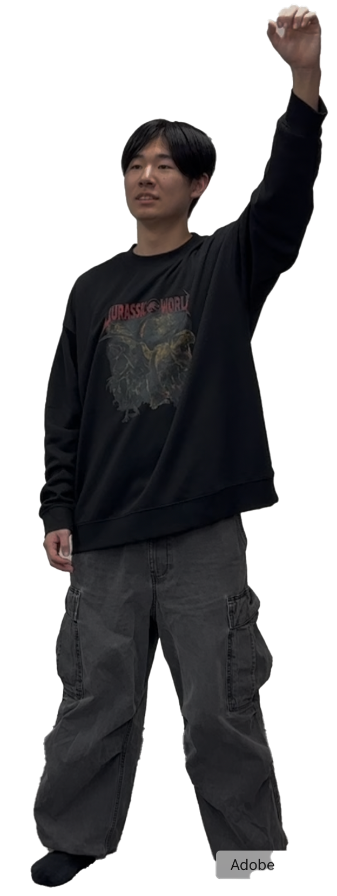
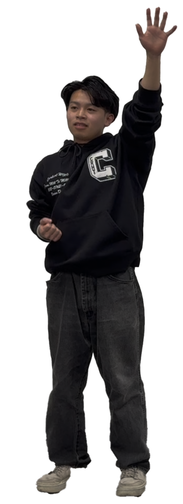

ホーム
こんにちは！私たちは博多駅南アカデミックチームです！
メンバー紹介
山本さん

N高等学校3年生。中学生の頃腹筋が割れていたことを思い出し、また腹筋を割って、大学でチヤホヤされたいと思っている。
筋肉の妖精

山本さんと同じく、N高等学校3年生。「一ヶ月ブートキャンプしたら腹筋割れる説」に巻き込まれた人。
こんにちは！私たちは博多駅南アカデミックチームです！

N高等学校3年生。中学生の頃腹筋が割れていたことを思い出し、また腹筋を割って、大学でチヤホヤされたいと思っている。

山本さんと同じく、N高等学校3年生。「一ヶ月ブートキャンプしたら腹筋割れる説」に巻き込まれた人。